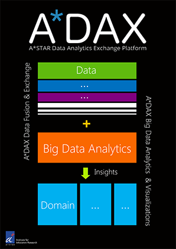
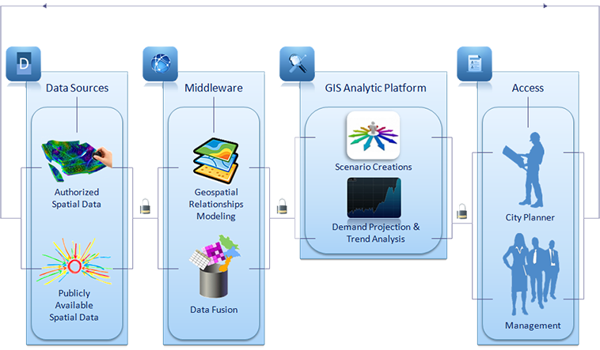
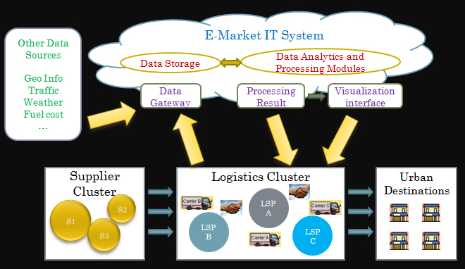
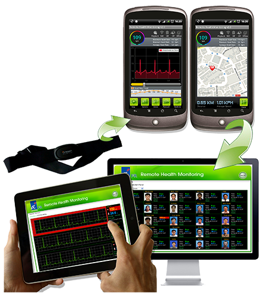

Wee
Siong Ng (Ph.D)
Wee
Siong Ng (Ph.D)Wee Siong is the Principal Investigator of the following projects:
| A*Data Analytics and Exchange Platform (A*DAX) [Phase 1 ] |
|
Large amounts of
social, economic, geographic, business, and education are routinely
collected by the public sector, which can be used to fuel the
knowledge-based economy and enable better urban planning informed
by data. However, a major roadblock is that the data are kept isolated
in various proprietary information systems and formats. We propose the
A*Data Analytics and Exchange Platform (A*DAX) to address these
problems for urban planning.
A*DAX is a data platform designed for live access and integration of urban data which include the public sector data mentioned above as well as real-time data from new sources such as sensors deployed in the cities. Our aim is to provide improved access to high quality data and tools for urban analytics to developers, researchers, and public agencies with authoritative data that are actively managed by A*DAX for urban systems innovations. A*DAX will support open standards, structured & unstructured data, as well as static and real-time query in accordance with the principles of ease to find, access, exchange and use. 
|
|
|
| Integrated GIS Platform for Land Use Planning and Analytics (GISLD) [01/09/2013 - 31/08/2015] |
|
As a city state
with limited area but growing landuse demand, farsighted landuse
planning has always been critical to Singapore’s success. Recently, a
government White Paper projected that the Singapore’s population hits
6.9 million by the year of 2030, indicating realistic challenges in
forthcoming years for Singapore landuse planning.
Though Singapore has been regarded as successful in landuse planning in the past decades, to maintain its competitiveness and healthy growth, its landuse planning also needs to be constantly improved. In this technology age, each government agency has been using its own IT infrastructures to collect, store, and analyze various forms of data, mainly for its own functional purpose. However, the sharing and exchange of data are still uncommon. Nevertheless, wise decisions on landuse planning often need to incorporate information from multiple data sources, which the current tools for landuse planning fail to provide. For example, the planning for the residence area needs to take the transportation capacity in the area into consideration. GISLD project aims to fuse information from different sources and leverage on data analytics and complex systems modeling to support and enhance current land use planning processes. The GISLD platform contains four work packages including Housing Demand Projection, Integrator, Transport Analysis, and the Geographical Information System Land distribution. This project aims to develop a platform with decision support engines, to aid planners in considering landuse distribution and staging options based on the range of landuse and infrastructure demand, so that the planners can make better decisions in landuse planning. 
|
|
|
| Urban Logistics Data Harmonization & Analytics (UrbanDNA) [01/7/2013 - 31/08/2015] |
|
The last-mile
logistics plays an important role in a supply chain. It is the final
stage to delivery freight to urban customers, by meeting the timing
promises. Thus last-mile logistics directly affects the satisfaction of
customers and quality of delivery services. On the other hand, the
last-mile logistics is a very challenging stage. It deals with
different issues in vehicle choosing, delivery scheduling, route
planning, etc., which are affected by static and dynamic factors such
as customer demands, available resources, priority requirements,
traffic conditions, cost changes and so on
To improve the efficiency and effectiveness of last-mile logistics, there is a compelling need for a basic and holistic framework that integrates and clearly organizes all the related roles, components and factors. Based on such a framework, the last-mile urban logistics models can be intuitively viewed, the performance of each component can be analyzed, the overall effectiveness can be evaluated, optimizations and improvements can be targeted and resources and information can be shared among different carriers. In this project, we aim to develop a representative framework for last-mile urban logistics, which is simple enough for common understanding among different industries and stakeholders but flexible enough to be carved for any specific company. Furthermore, based on the understanding of the relationship among different last-mile logistics components in the framework, we design and develop a data-centric system which collects, harmonizes and analyzes data from those components. Besides offering basic functions such as visualization, data analysis and report generation, the system is also a foundation on top of which collaborating R&D work can be performed to improve the services in last-mile logistics. 
|
|
|
| Hippocratic Data Stream Cloud for Secure, Privacy-preserving Data Analytics Services (HipCloudS) [01/8/2010 - 31/07/2013] |
|
The rapidly
increasing number of sensors and surveillance devices as well as the
coming of age of pervasive and cloud computing are fuelling the need
for realtime stream data management tools. In a world that is highly
submerged in data, data analytics and higher forms of data exploitation
have received a lot of attention from research communities as well as
enterprises. We can expect a vast number of innovative data services
arising from the massive deployment of data analytics technology in a
large variety of domains, such as urban planning, environmental
protection, disease prevention, homeland security, health-care,
finance, entertainment, education, supply-chain management, and
transportation. However, enabling such a technology requires several
factors to be addressed. These factors include: 1) Increasing privacy
and confidentiality requirements as stream data may convey information
related to individuals or information that are critical to
organizations; 2) High throughput as data streaming environments are
highly-demanding as continuous queries are executed over stream data
that are usually generated at high rates; 3) Integration of high
performance/cost ratio infrastructure (i.e., Cloud) with optimized
security and privacy mechanisms; 4) Security and privacy mechanisms
that should be able to process stream data incrementally; and 5)
Voluminous data that is streamed in/out which increases the system’s
vulnerability to security attacks.
In this project,
we aim at providing competing technologies for privacy policy
enforcement on streaming data that is efficient and comprehensive. To
address the problem of privacy, we propose a Hippocratic Data Stream
Cloud (HipCloudS) architecture that enables secure, privacy-preserving
data analytics services.
In detail, the HipCloudS shall identify and address the following open research challenges: " Enabling shared execution of queries in the Cloud environment; " Supporting dynamic changes in security and privacy preferences; " Managing secure data streams by accepting stream cipher-encoded data; " Providing a means of verifying privacy compliance; " Support of fundamental Hippocratic principles such as limited collection, limited retention and limited disclosure; and " Guaranteeing a minimum Quality of Service (QoS) for the duration of an accepted query. |
|
|
| A Service-oriented Architecture for Mobile-Health (SOAMOH) [01/12/2008 - 31/03/2010] |
|
SOAMOH is a
remote health
monitoring platform based on the service-oriented computing paradigm.
The objective is to facilitate the provisioning of healthcare to people
anywhere, anytime using
mobile devices that are connected through wireless networking and
communication
technologies. Generally,
there are three basic scenarios where the SOAMOH service can be of
great value: ·
Monitoring
the health of a patient in the hospital and at home ·
Monitoring
vital signs of an injured person during transport or triage ·
Monitoring
the health of a person performing hazardous work The
first main application
area is clinical and home health monitoring. More and more hospitals
move
towards minimizing the time a patient spends in the hospital. Patients
are
being released earlier, but the requirement to monitor their health
until they
have sufficiently recovered remains. Home health monitoring is often
the
solution and has become reality today thanks to recent advances in
telemedicine. The SOAMOH service can be invaluable in this area,
providing
patients at home with more mobility than conventional home health
monitoring
equipment. By the same time, the doctor can access the latest patient
status
securely and conveniently over the Internet. The
second scenario deals
with general patient transport. A first responder or emergency worker
could
apply the SOAMOH service to a patient within seconds before initiating
the
transport to the hospital. The patient's vital signs could then be
transmitted
to the hospital while the ambulance is still on its way, and on arrival
at the
ER the doctor will have an immediate knowledge of the patient's status
and
history. Monitoring a person who is performing hazardous work is the third basic scenario. Fire fighters and hazardous material workers are typical examples but also mountain climbers and soldiers belong to this category. In each case, there is great physical strain involved. An awareness of the general physiological status is important not only for the fire fighters or soldiers being monitored to help them manage their risks, but also for their support teams that have to make decisions that can save their lives. 
|